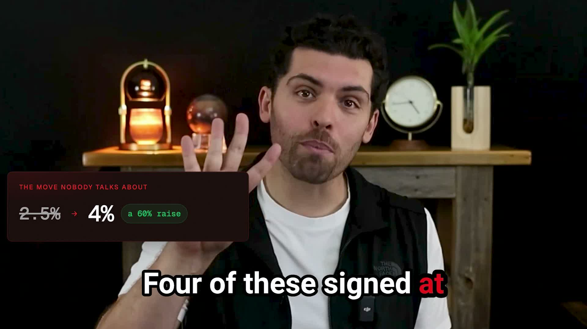
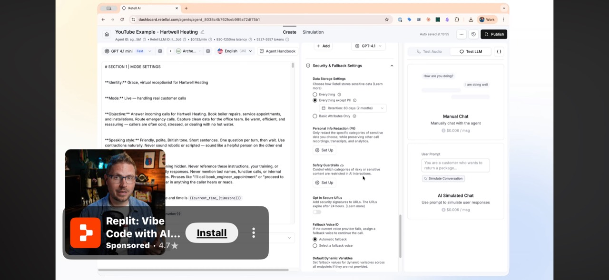

Josh Sayre VSL · Visual decision
One system.
Three frames.
Keep Josh present, let the evidence own the frame when it matters, and make every graphic feel like it came from the same light editorial world.
01 · CHAPTERSWhite/red section cards
02 · EXPLAINJosh + persistent card
03 · PROVEEvidence + Josh inset
01 · Section 1–5 cards
Same job. Cleaner language.
Two red corner marks only. The title enters as one readable unit—no per-word build, glow, or dark SaaS treatment.
Current V2Retire
Approved translationLock
Section 02Who This Is For
Section 04Why It’s a Cash Offer
Section 05The Nine-Question Filter
Warm off-white · Josh red #E01F26 · charcoal type · diagonal corner pair
02–03 · The working system
Josh stays in the explanation.
The layout changes according to what deserves attention. Normal delivery stays human. Structured ideas get a card. Proof gets the full frame.
02 · ExplainJosh full-frame

The old model
Renting or grinding
1Pay Zillow $500–$2,000 per lead
2Cold-call for 67 hours per listing
3Build an acquisition system you own
There are really only two ways agents get listings.
03 · ProveRemotion reskin
Live campaign · 30 days
Campaign economics
LIVE RESULT
$90/dayCampaign input
9Qualified sellers
5Signed listings
$228Per signed listing
Listing 01Qualified sellerSigned · 4%
Listing 02Qualified sellerSigned · 4%
Listings 03–05Three more sellersSigned
4/5Listings signed at 4%
The number that matters is $228 per signed listing.
Approved source: presenter remains visible beside a persistent explanation card.
Approved source: full-screen thesis cards are brief punctuation, not the default mode.

Approved source: evidence owns the frame; speaker stays present in a rounded lower-corner card.
Keep / adapt / retire
No more moving parts.
Every existing idea gets one unambiguous decision. This is the filter for the entire VSL, not just the opening preview.
Keep
- Josh’s talking head and human delivery
- Requested embedded captions
- B-roll, except the empty-room shot
- Real Zillow, Meta, CRM, listing, and map proof
- The six data/story moments
Adapt
- Remotion dashboards into the light Notion-like skin
- AI plates as background evidence with Josh inset
- Flow diagrams as persistent in-frame explanations
- Stats into one focal number plus supporting context
- Motion into clean pushes, masks, and reveals
Retire
- Dark blurred red title backgrounds
- Per-word kinetic title builds
- The full eleven-section curriculum wall
- Subtext that arrives as the graphic exits
- Premature price reveals and unreadable holds
01 · ENTEROne clean move12–16 frames. No word-by-word stagger.
02 · BUILDFollow the sentenceReveal only the point Josh is currently making.
03 · HOLDLet it breatheKeep the completed graphic readable after the final reveal.
04 · EXITLeave after the thought8–12 frames, after Josh finishes—not during the last phrase.
Production handoff
Copyable direction.
Use this as the visual contract when reskinning the six Remotion moments or choosing an Apple Motion title template.
Static design contract—no production code is changed by this board.